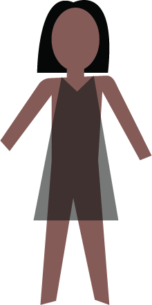
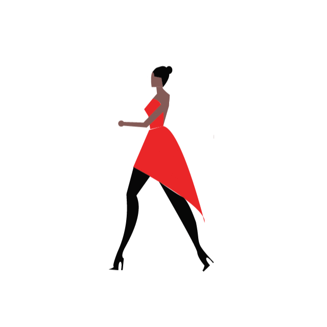

From Sketchbook to the Runway: The Process of a Fashion Designer
Research and Idea Development
Ideas always come from a source of inspiration. Good designs come from conducting research, much like the start of any other project. Designers gather information, aesthetics, inspiration and often combine them to make mood boards as a visual representation. Once an idea starts to form, this is when we start sketching it out.
Sketching and Design Concept
While sketching the piece, a designer needs to take into account several factors for when the piece actually becomes tangible. Things like color, structure, structure or texture are all things that are kept in mind. The final sketch is the framework of any piece.
Sketch Your Ideas!
Line width : Color :
Making Patterns
In fashion design, patterns are essentially the templates used before assembling a final piece. It is similar to making a gingerbread house- all of the pieces start flat, but are arranged together to create a 3D model. They are traced onto fabric to be cut and assembled to form the basis of a toile.
The Fitting
A toile is then made from the patterns, providing the basis of the completed product. There is lots of pinning, draping and adjusting involved so that when the final piece is made, it fits just right.
Sewing the Final Fabric
Finally, the fabric that the designer had in mind is used to create their piece going off the basis of the toile, which provided the outline. This is when the garment starts coming alive with the colors, and texture that one would be able to see in the initial sketch. If adjustments were made in the toile, the same would be made in the new pattern.

Final Touches
Once the garment is made, the designer drapes the garment onto the model or onto a mannequin. They need to make sure it falls just as they wanted, and a critical eye is used to asses every little detail to perfection before it goes out onto the runway.
